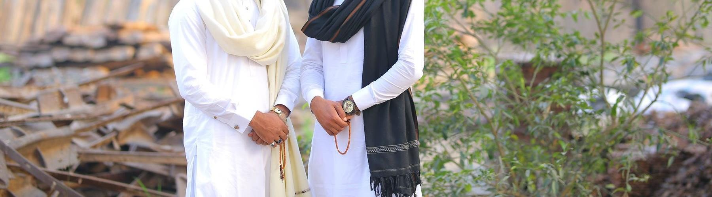

Precision, always
We measure carefully, write every number down and check the details before we cut.
A LOCAL TAILOR, A PERSONAL PROMISE
The best tailoring feels personal. That is how we treat every order.
03 / OUR STORYAD Pak Tailors is a gents tailor in Daska, Sialkot, built on a simple idea: clothes feel better when someone listens first and measures carefully.
We stitch kameez shalwar, kurta pajama, waistcoats, suits and wedding wear, and we alter what you already own. We write your measurements on a slip and keep it, so the next order is easier and the fit stays steady.

Not just measured.
Thought through.
We measure carefully, write every number down and check the details before we cut.
We listen to how you like to wear your clothes, then share what we know about cuts and cloth.
We are a small shop in Daska. If something is not right, you speak to the people who made it.